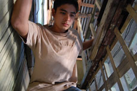

|
TIRADOR (Slingshot)
Brillante Ma. Mendoza | Phil. 2007 | 86 Min.
Material: MiniDV
Format: DigiBeta
Originalsprache: Tagalog
Drehbuch: Ralston Joel Jov
Kamera: Brillante Ma. Mendoza, Julius Villanueva, Jeffrey dela Cruz, Gary Tría
Ton: Ditoy Aguila, Junel Valencia
Schnitt: Charliebebs Gohetia
Musik: Tere Barrozo
Mit Jiro Manio, Kristofer King, Coco Martin, Nathan Lopez, Jaclyn Jose
Produktion: Centerstage Productions, Mandaluyong, Manila; Rollingball Entertainment, Mandaluyong, Manila
Caligari Filmpreis, 58. Internationales Forum des jungen Films, Berlin 2008
Kurz nach der Karwoche 2007 sind auf den Philippinen nationale Wahlen angesetzt. Den Hintergrund von Massenkundgebungen, Korruption und Stimmenkäufen nutzt der Film, um vom alltäglichen Überlebenskampf zu erzählen. Seine Protagonisten sind Kleinkriminelle, "tiradors", die in einer heruntergekommenen Mietskaserne in den Slums von Manila leben. In miteinander verwobenen Episoden fängt "Tirador" Momente im Alltag von Menschen ein, die durch erdrückende Armut zu einer ständigen Gratwanderung zwischen Leben und Tod gezwungen sind. Ihre ernüchternde Realität ist der Slum mit seinen schäbigen Behausungen, seiner Hoffnungslosigkeit. Hier gehören Drogenkonsum, Prostitution und Gewalt zur Tagesordnung.
"Hier geht eine Welt zugrunde und immer tiefer ins Chaos hinein. Und was der Film inhaltlich inszeniert, wird formal äußerst konsequent umgesetzt. Selten hat man unruhige Plansequenzen, schnelle Schnitte und dichte Close-Ups ästhetisch so berechtigt und richtig erlebt wie in 'Tirador'." (Dunja Bialas, "artechock")
Brillante Ma. Mendoza, geb. 1960 in San Fernando, Pampanga. Er studierte Werbung an der Universität von Santo Tomas, Manila. Zunächst Szenenbildner für Kinofilme, beim Fernsehen und Theater, arbeitete er später auch in der Werbung. 2005 entstand sein erster abendfüllender Spielfilm.
Filme: Serbis 2008 | Tirador 2007 | Foster Child 2007 | Pantasya 2007 | Manoro 2007 | Kaledo 2006 | Masahista 2005
zurück
|